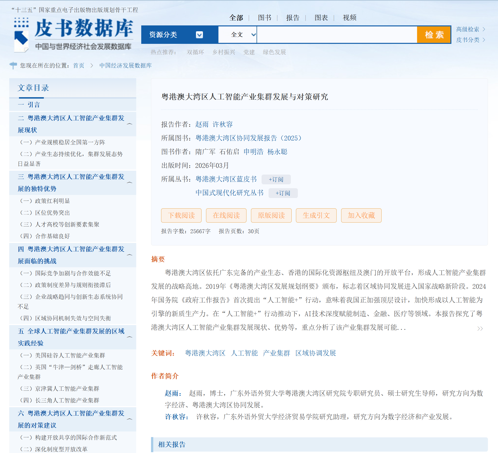
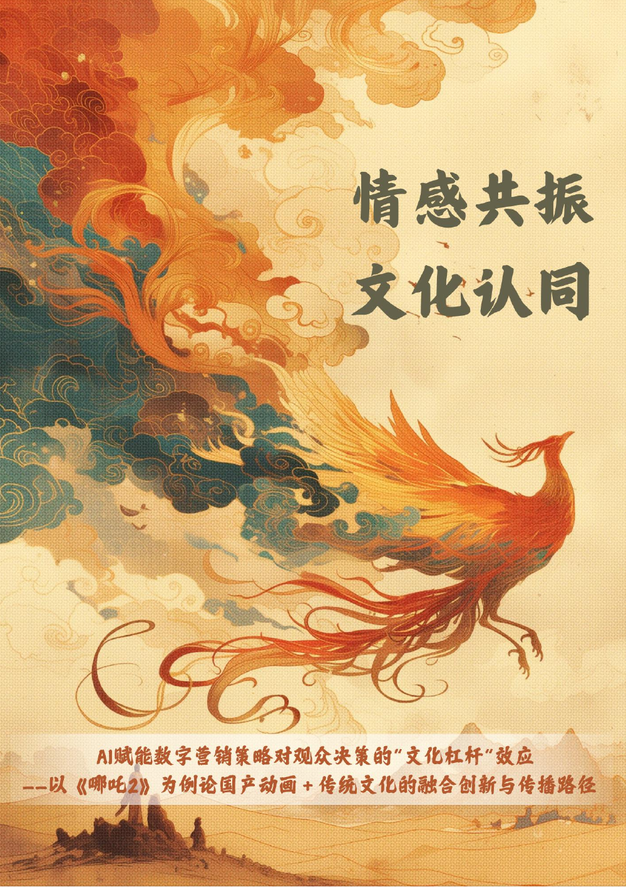
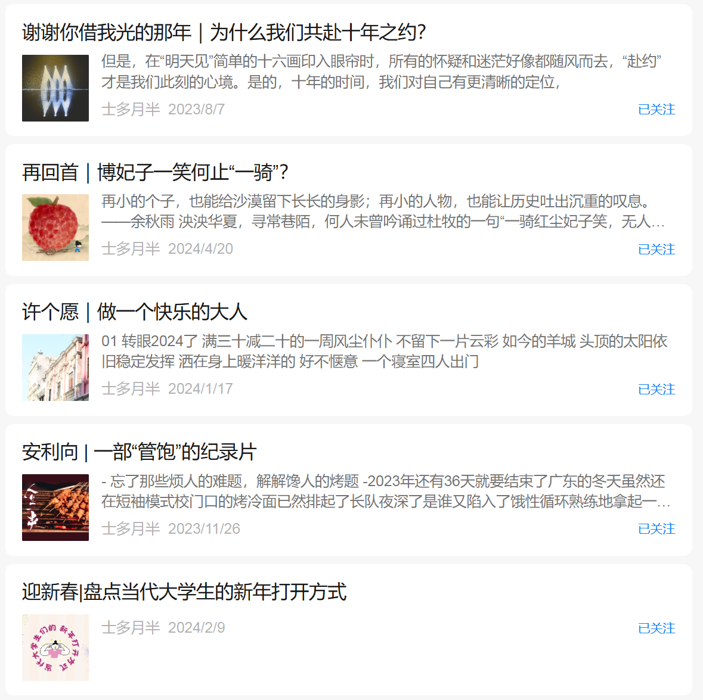
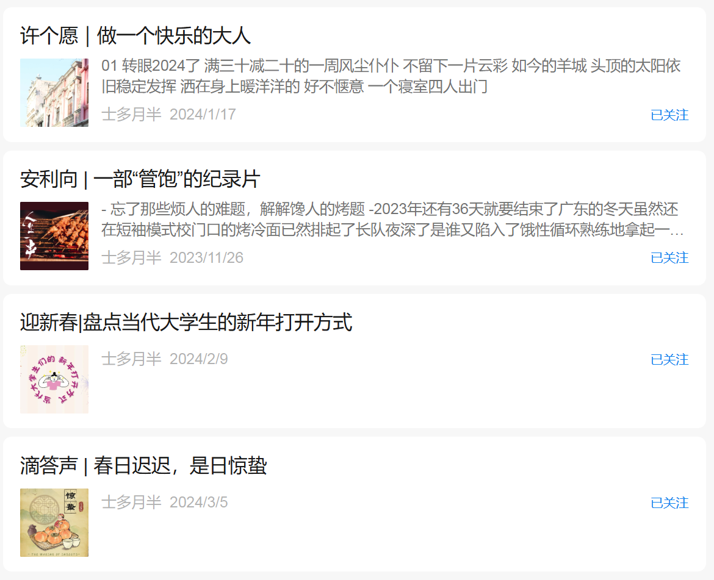
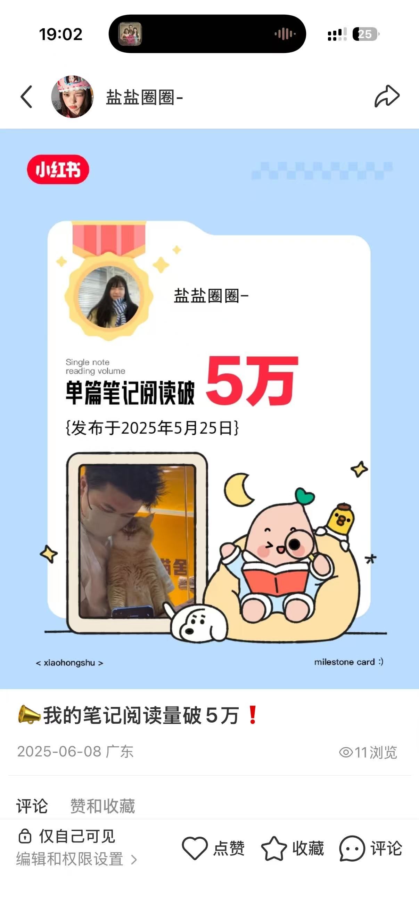
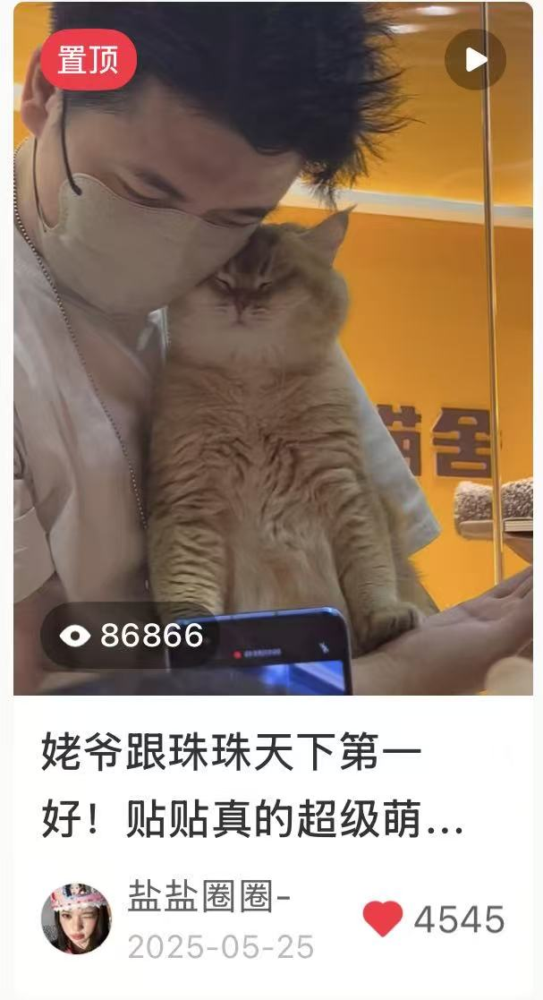
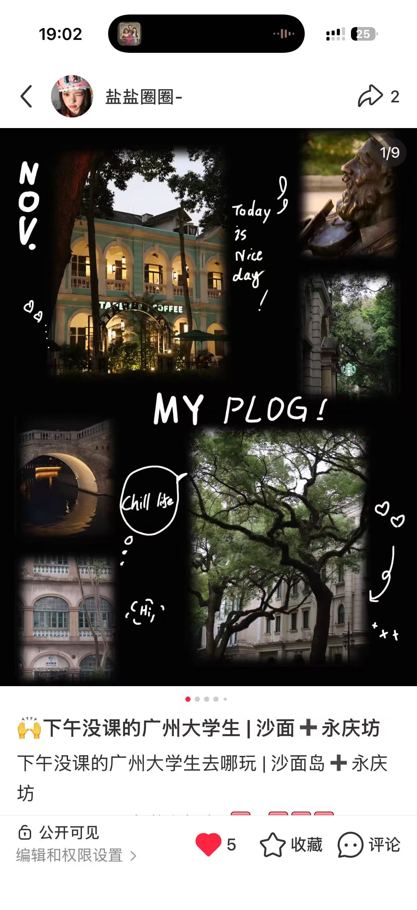
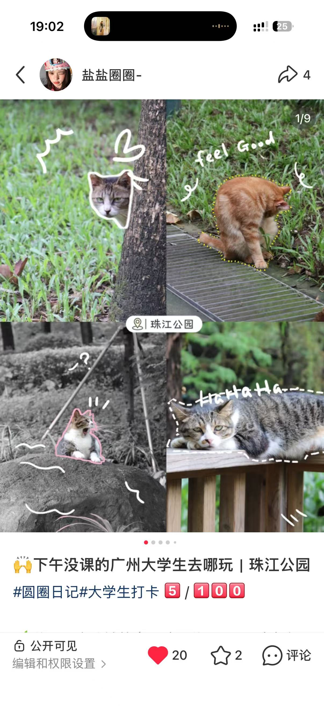
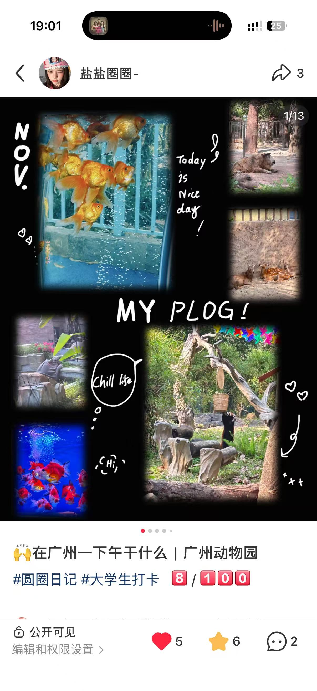

FORTUNE GLOBAL 500MIDEA推广运营 · 国内
美的集团股份有限公司
用户与流量运营部｜推广运营—国内
- 内容运营与直播支持：完成 12 份宣传物料，协助 3 场专题直播，并复盘曝光、成交与用户增长数据。
- 终端活动与用户运营：走访 11 家门店、参与 4 场线下活动，衔接线上内容触达、终端承接与现场用户体验。
- 活动反馈与数据管理：整理 195 家运营商核销资料与 1941 张反馈照片，跟进广州、佛山 5万+ 笔国补订单。
HELLO / ABOUT ME
数据分析 × 内容运营 × 项目执行
保持好奇，探索自己的职业方向 ing...
01 / EXPERIENCE
五段不垂直实习，横跨制造业、国家级展会、互联网媒体、金融与公共服务。方向不同，但都在训练我更快理解业务、处理信息并推动事情落地。
用户与流量运营部｜推广运营—国内
广交会 VIP 贵宾俱乐部｜B区组长
内容运营｜奇瑞相关项目
人力资源部｜实习生
税费监管组｜实习生
02 / ACADEMIC PROJECTS
不把比赛和论文简单堆在一起，而是按“研究—市场—数学建模”三种解决问题的方式重新梳理。
从研究问题、资料整理到文章写作，区分已发表成果与在投论文。

梳理政策文本与产业资料，从集群发展现状、区域优势、现实挑战到协同对策完成专题研究，文章收入《粤港澳大湾区蓝皮书》。
基于 2000—2020 年土地利用序列，结合 MOP 多目标规划与 PLUS 模型进行四类情景模拟，构建多指标生态风险指数，并将景观生态风险预测延伸至 2040 年。
使用 2013—2023 年 UN Comtrade 数据测算贸易依赖度，构建上、中、下游多层贸易依赖网络，并结合加权度、介数与特征向量中心性识别重点国家。
从跨境电商到文化消费，关注用户、市场与传播之间的真实联系。
围绕亚马逊女装与男鞋市场，综合市场规模、竞品、消费者偏好和财务表现，完成 4 份市场报告与运营建议。

同一研究项目在两项赛事中迭代验证：抓取 9000+ 条评论，结合 400 份问卷、PLS-SEM 与 LDA，完成 68 页报告和 90+ 张分析图。
面向高校在校生，围绕人才培养、职业规划、人才评估与人岗匹配设计数智化就业指导模式；我负责市场调研、用户痛点分析与营销策略。
把复杂问题转化为可计算、可验证、可解释的模型与结论。
围绕孕妇 BMI 分组与无创产前检测时点，完成数据清洗、模型求解、可视化及论文整合，并参与胎儿异常判定模型研究。
将关键矿产供应链研究并入统计建模项目，综合回归、系统动力学、博弈论与模糊推理，形成行业动态战略规划。
03 / CAMPUS & LIFE
校园角色训练协作，辩论与内容创作训练表达；旅行和摄影，则提醒我保持对具体生活的感受。
7 段学生工作经历，既有组织协调，也有学术、表达与服务。
班级沟通、活动组织与日常事务推进。
协助信息整理、学生沟通与事务执行。
参与校级活动、宣传与行政协作。
参与新媒体内容、海报与活动报道。
资料检索、观点论证与现场表达。
预算、报销与团队日常财务支持。
参与学术资料整理、讨论与研究协作。
在不同立场中搜集证据、拆解观点，也学习在高压交流中听见对方真正的问题。


围绕校园生活、城市观察与个人感受持续写作，完成选题、资料整理、成稿与排版。


从选题、拍摄到排版与文案，持续记录校园、城市与生活观察。


